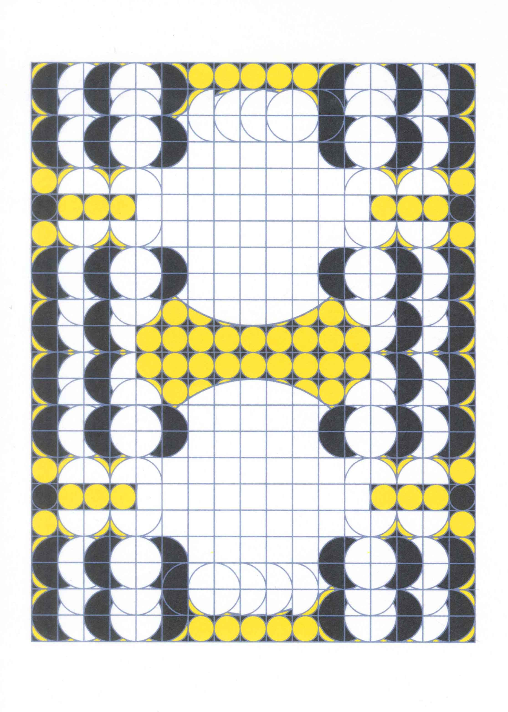
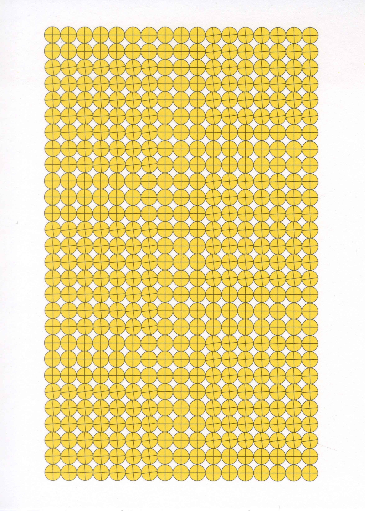
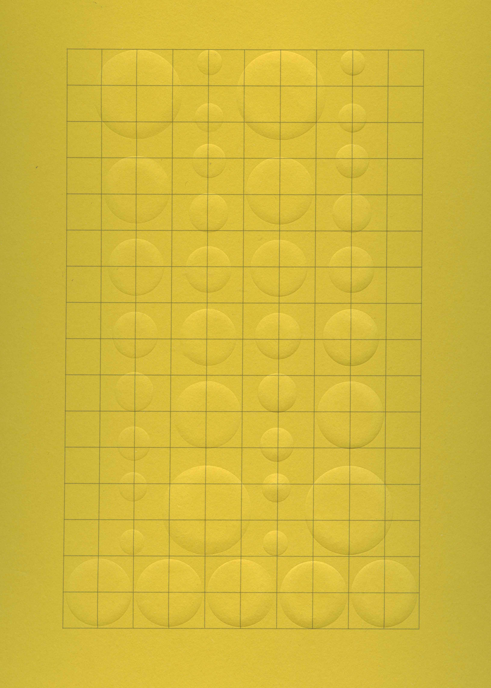
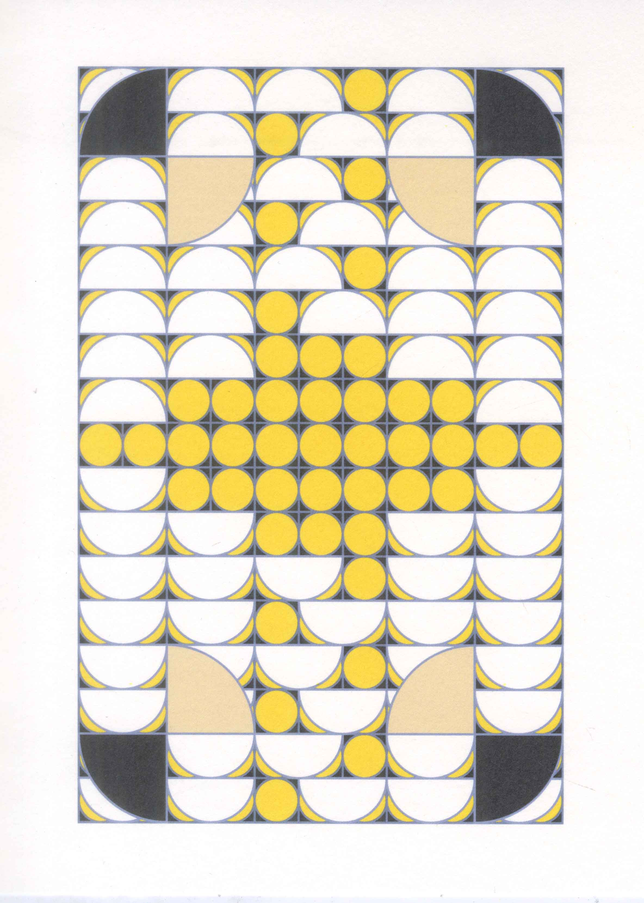
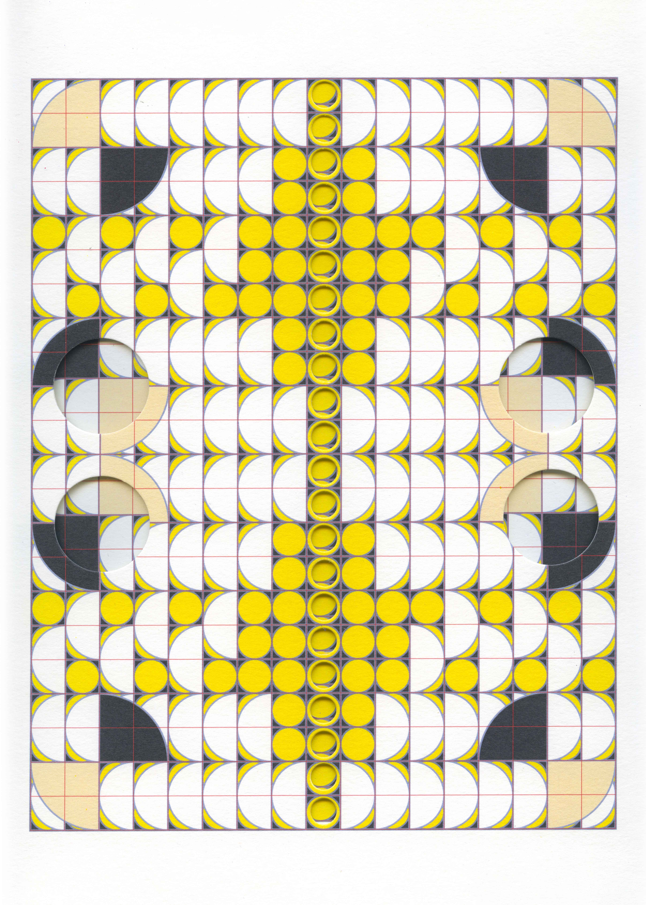
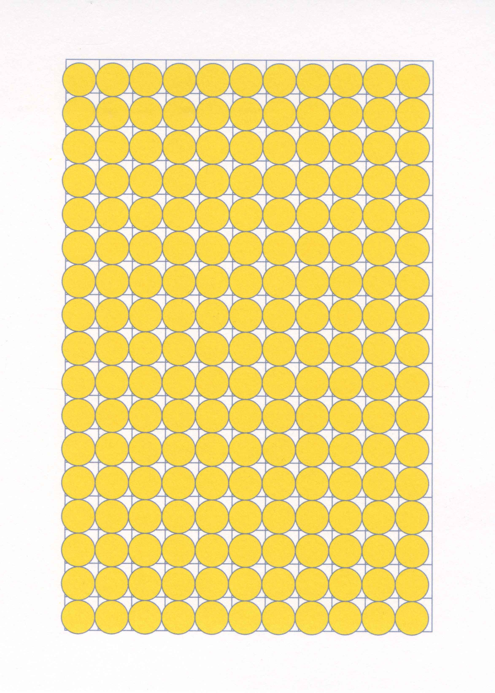
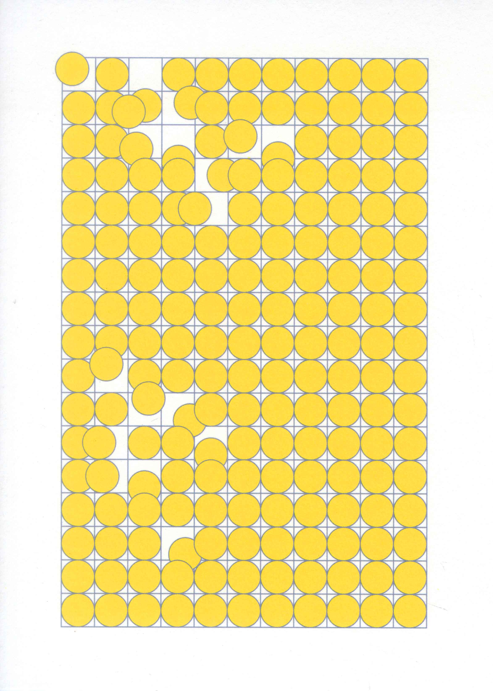
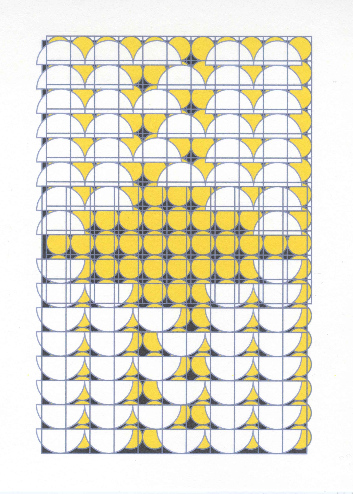
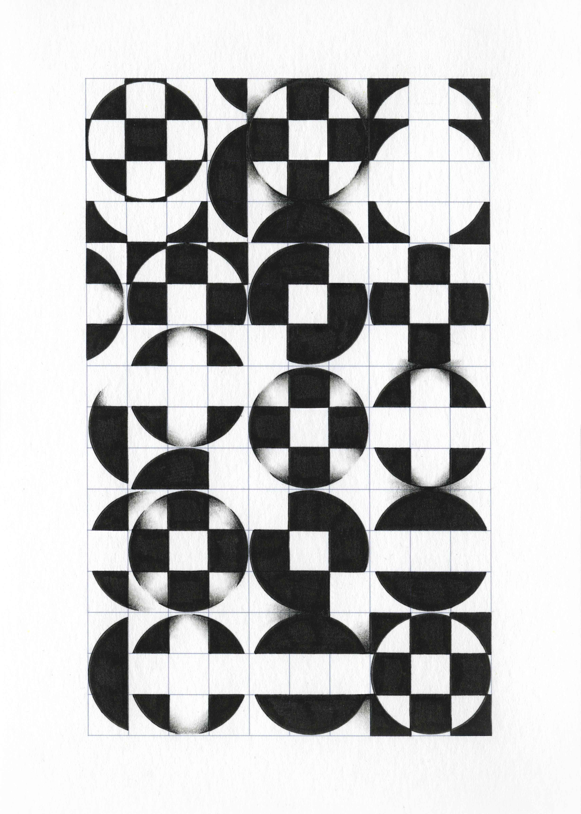
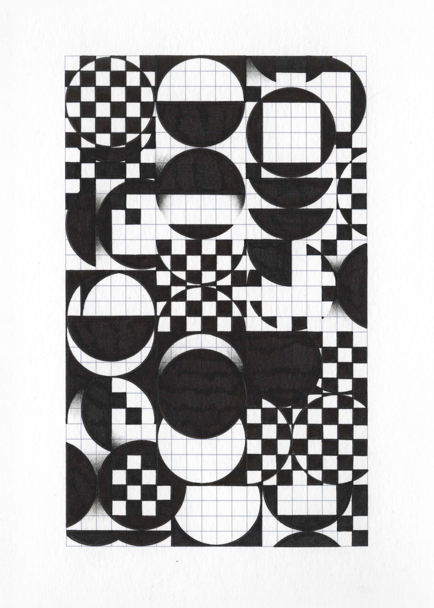

Abstract
This research investigates how pre-defined structures—in particular grids—shape image-making and authorship. It asks: What happens to image-making when it begins not from an empty surface, but from a structure that is already there? And how does this affect the role of the maker within the process? Through studio experiments placing a single element, a circle, across different grid systems, a workshop at KABK, and conversations with artists, I explore how working within a grid transforms the creative process and decision-making.
Grids here are approached as pre-existing organizational frameworks that guide attention, introduce both repetition and variation, and establish conditions under which images can emerge. This approach shifts authorship from the individual artist to a shared process between maker and framework, balancing structured guidance with spontaneous expression.
Engaging with insights from Henri Jacobs and Marijn van Kreij, alongside theoretical perspectives from Roland Barthes and Hito Steyerl, the research situates my practice in relation to inherited systems and broader questions of distributed authorship in analogue and digital image-making. By treating grids as active participants, the work demonstrates how pre-existing structures generate rhythm, variation, and unforeseen outcomes, revealing how creative agency emerges through negotiation rather than solely from autonomous intent.
Trace 0
Before the first mark is made, I encounter a surface. Divisions, intervals, and pre-existing patterns are already there, shaping where I can move, pause, and place a line. Decisions do not arise from emptiness; they emerge through the interaction between hand and framework. Here, making begins—not as execution, but as negotiation.

Throughout this research document, you will encounter grid-based works (2026), created by the author and artist, integrated as visual elements that explore the shifting power dynamics between grid and content, presented without a fixed order.
Introduction
My initial fascination with image-making, particularly drawing, wasn’t so much about what I was drawing as it was about the surfaces I was drawing on. As a child, I was attracted to notebooks with margins, squared paper, and printed templates. The page was not empty, and I did not have to invent everything myself—I could enter a pre-defined grid and respond to it. This attraction gradually became central to my practice.
Today, I notice that the moment I introduce a grid 1 1Here, I use the term “grid” to describe pre-existing organizational systems, such as printed formats and structures. While these forms differ in appearance, they share a common function: they organize the surface of a page in advance, establishing a set of conditions that guide how the image develops. into my work, my attention shifts to smaller segments, and decisions become more local and conditional. Instead of asking what I want the image to be, I begin to ask what is possible within the grid in front of me.
This raises a question: What happens to image-making when it begins not from an empty surface, but from a structure that is already there? And how does this affect the role of the maker within the process?
This research develops through both practice and observation. It includes a series of experiments in which I place a single visual element—a circle—into different grids, as well as a workshop at KABK. Rather than starting from a fixed outcome, these situations function as experiments to test how structure influences decision-making. During the workshop, I observed how different participants responded to the same grid. Some treated it as a strict set of rules, while others used it more loosely as a guide, resulting in variations in alignment and repetition. 2 2While this workshop played an important role in shaping the direction of this research and establishing its experimental framework, it will not be analysed in detail within this essay.
Interviews with other makers further expanded this line of inquiry, opening questions about how I position my own practice in relation to structure and authorship.
Setting up an experiment
I began working with a simple experiment: repeatedly placing a circle within different grid systems. Rather than composing freely, I approached each image as a negotiation with the structure it entered. In each case, the circle is adapted according to the logic of the grid—sometimes repeated within cells, sometimes stretched across divisions, and sometimes interrupted.
In setting up the practical exploration with the grid, I chose to work with a circle because it is a continuous, closed form often associated with wholeness and unity. 3 3See for example: Juan Eduardo Cirlot, A Dictionary of Symbols, 2nd ed., trans. Jack Sage (New York: Dover Publications, 2002).Its apparent completeness contrasts with the rigid divisions of the grid, making it particularly sensitive to the structure it enters. Within this tension, it can be repeated, stretched, or interrupted, allowing its apparent neutrality to be tested and redefined through each configuration.
Trace 1
When entering the grid, I feel as though I am entering a new environment. How do I respect its rules, its natural order, its pre-made decisions? I am aware that the grid is not neutral: its edges and proportions already propose ways of moving, pausing, and occupying space. I do not arrive as a free agent, but as a visitor negotiating with an existing structure.


Entering a surface that is already organised
Throughout the history of image-making, the grid has functioned as a fundamental organizational device. It operates across many contexts: as a method for transferring images,
4 4 See for example: Leon Battista Alberti, On Painting, trans. John R. Spencer (New Haven: Yale University Press, 1966).
as a compositional aid in drawing and painting,
5 5 See for example: Betty Edwards, Drawing on the Right Side of the Brain (New York: TarcherPerigee, 2012).
as a structural system in graphic design and architecture,
6 6 See for example: Josef Müller-Brockmann, Grid Systems in Graphic Design (Zurich: Niggli, 1981).
and as a conceptual framework in modern and contemporary art.
7 7 See for example: Rosalind E. Krauss, “Grids,” October 9 (Summer 1979).
Grids also exist in everyday formats such as notebooks, graph papers, ruled or dotted journals. These are not neutral supports, but pre-structured environments designed to organize writing or calculation. In its most basic form, a grid divides a surface into equal segments, creating a network of horizontal and vertical lines that organize space before any content appears.
8 8 See for example: Ellen Lupton and Jennifer Cole Phillips, Graphic Design: The New Basics, 2nd ed. (New York: Princeton Architectural Press, 2015).
Historically, the grid has often been treated as a practical tool that assists the artist in achieving accuracy or proportion.
9 9 See for example: Edwards, Drawing on the Right Side of the Brain.
It can help enlarge or reduce an image, maintain perspective, or distribute visual elements across a surface.
The grid plays a central role in design. In graphic design, editorial layouts, typography, and architectural planning, grids act as practical frameworks for organizing content, balancing proportions, and guiding the viewer’s attention.
10 10 See for example: Kimberly Elam, Grid Systems: Principles of Organizing Type (New York: Princeton Architectural Press, 2004).
Recognising this dual role of the grid as both a conceptual and functional system, situates my practice within an area where structure is not only a visual device but also a tool for navigating and controlling space.
11 11 See for example: Lupton and Phillips, Graphic Design: The New Basics.
When a grid is placed onto a blank page it becomes an organized field, where divisions and directions are present before the first mark is made. In this research, I am not treating the grid as a passive tool, instead I approach it as a visible structure that conditions how an image develops. I make visible how image-making can be shaped by working with pre-existing structures.
The grid becomes less a tool for functional organization and more a framework for exploration. Rather than determining a fixed outcome, it sets conditions that shape how forms are placed, repeated, and varied. Image-making becomes a process of negotiation between form and structure, where the grid both guides and challenges development while retaining traces of its original logic. This creates a productive tension between its practical purpose and its role in image-making.
Distributed Authorship
In carrying out these experiments, my understanding of authorship shifted. Each image emerged through a negotiation between my creative decisions and the structure of the grid, and authorship became shared between the grid and my actions.
This idea of co-authorship resonates strongly with the writing of French philosopher Roland Barthes in “The Death of the Author” which challenges the idea of a singular, fixed authorial voice. Barthes argues that authorship is not fixed or singular, but unstable. Engaging with authorship in literature, he challenges the traditional view that a work should be understood as the direct expression of a single authorial voice, proposing instead that a text is produced through a variety of influences, references, and structures that extend beyond the intentions of its maker.
12 12 Roland Barthes, "The Death of the Author," trans. Richard Howard, Aspen 5–6 (1967).
Barthes describes writing as a multidimensional space where various kinds of writing, none of them original, meet and contest one another, suggesting that meaning emerges through the interaction of multiple elements rather than from a single origin. Barthes famously formulates this shift in the statement that "the birth of the reader must be ransomed by the death of the Author."
13 13 Ibid., 6.
By this he does not mean that the author literally disappears, but that the authority traditionally attributed to the author should no longer determine how a work is understood. Meaning is instead produced through the relationships that unfold within the work and through the engagement of the viewer or reader.
In my work, this becomes visible through the grid. The grid pre-organizes the surface before the image begins, establishing divisions and proportions that shape how the image develops. Each image is made in relation to this existing structure rather than emerging from an entirely autonomous decision. Image-making therefore unfolds less as the execution of a predetermined idea and more as a negotiation with structure. The grid does not dictate the final image, but shapes the conditions under which the image can appear–guiding where attention moves, where lines continue or stop, and how different parts of the surface relate to one another.
Moving from here, authorship in the image becomes distributed between gesture, grid, and interpretation. Each variation emerges from the dialogue between my hand and the grid, where structure sets possibilities and limits, and my responses introduce subtle shifts. The resulting images make this negotiation visible, showing how outcome, authorship, and meaning unfold across grid, gesture, and viewer.
Trace 2
At what point does following the grid become a form of listening rather than obedience?
Sometimes I begin by treating the grid as a strict instruction. I follow its divisions carefully, almost mechanically. But after a while something shifts. The structure stops feeling like a restriction and begins to function more like a guide. Instead of resisting it, I start to read it. The grid begins to suggest possibilities I would not have invented on my own.


The Grid as Structure
In understanding image-making as a negotiation with a grid, images can be further seen as products of the very system that organizes them. For example, placing a circle across cells of graph or dotted paper highlights how the pre-existing divisions guide, constrain, and shape decisions—helping the reader see how structure informs both placement and variation. Grids are structures that often remain invisible, yet strongly influence how images are made and how they are perceived. In this context, the grid can be understood as part of a pre-existing system that organizes movement, attention, and spatial relationships across the page, establishing conditions under which visual forms emerge. This sets the stage for thinking about how grids operate not only in analogue contexts but also in contemporary digital infrastructures.
In contemporary visual culture, grids become particularly visible in digital media, where platforms, file formats, algorithms, and institutions shape how images are stored, circulated, and viewed, influencing both their visibility and meaning. German filmmaker and artist Hito Steyerl addresses these conditions in Duty Free Art, examining how images are embedded within global systems of circulation and exchange. Her work offers a useful lens for considering image-making as a negotiation between hand, gesture, form, and framework, where grids guide creative decisions without fully determining them.
14 14 Hito Steyerl, Duty Free Art: Art in the Age of Planetary Civil War (London and New York: Verso Books, 2017).
In Duty Free Art, Steyerl argues that images exist within complex economic, technical, and institutional systems that shape their circulation. Rather than functioning as stable, self-contained objects, images move through networks of platforms, archives, and distribution channels, where they are continually reformatted, reproduced, and recontextualized. These processes influence not only how images appear, but also how they are interpreted and assigned value.
For Steyerl, this condition fundamentally alters what an image is. It is no longer defined solely by its visual content, but also by the infrastructures that enable its movement and visibility. Circulation becomes part of the image itself, as the systems through which it passes shape its meaning and function. In this sense, images operate less as fixed representations and more as elements within dynamic networks. Similarly, pre-existing structures such as grids actively condition how images emerge, shaping how marks are made, organized, and perceived.
Thinking of the grid as infrastructure shifts how its role in the image-making process can be understood. Rather than serving only as a tool, it becomes a system that conditions behaviour, guiding how attention moves across the surface and how different parts of the image relate to one another. Decisions take place not within an open field but within a spatial framework that already directs movement and perception.
Distributed Authorship: Insights from Henri Jacobs and Marijn van Kreij
In exploring how grids shape authorship and creative decisions in image-making, I sought out artists whose practices critically engage with questions of authorship, repetition, and grids. In early February 2026, I met with Henri Jacobs in his studio in Brussels for a two-hour conversation. I was particularly interested in how he works with grids and formats that resemble educational or institutional templates, such as notebooks and diagrams. Jacobs explained that many of these formats originate outside the art world, and by adopting them, his work engages not only with images but with the frameworks that shape how visual information is organized. Central to this is a certain withdrawal from authorship — a way of letting structure and process take over from intention.
I try to take the author—myself, really—out of the picture. When you want to make something, you naturally start with a number of given elements, points of departure, and fascinations, but I notice more and more, the further I get, that in fact the play itself and the unforeseen outcome are much more important to me in order to keep going.
15 15 Henri Jacobs, conversation with the author, Brussels, Belgium, February 17, 2026, author’s translation from Dutch.
In reflecting on my own practice, this approach emphasises structure as an active component in the image-making process. Working with pre-defined grids, decisions do not emerge solely from intention, but unfold through repetition and variation within an existing framework. In this sense, authorship becomes distributed, with the outcome arising from the interaction between my gestures and the grid that precedes the work.
This understanding of distributed authorship is further informed by the practice of Marijn van Kreij, an artist based in Amsterdam, whose work often involves repetition, reworking, and recomposing existing material. I engaged in a one-hour conversation with van Kreij in February of 2026. Rather than producing entirely new images, van Kreij works through copying, rearranging, or reinterpreting pre-existing forms. Emphasis shifts from individual expression toward strategies and procedures that shape how images emerge. Through this conversation with van Kreij, I learned how authorship can be distributed across selection, ordering, and reframing processes, allowing the images themselves to guide subsequent decisions.
16 16 Marijn van Kreij, conversation with the author via Microsoft Teams, February 10, 2026.
Although van Kreij does not typically work with grids, his approach resonates strongly with my interest in authorship as something that unfolds across systems and procedures rather than within a single expressive gesture. Repetition, iteration, and structural frameworks become generative, producing unforeseen outcomes while redistributing decision-making.
These perspectives illuminate how authorship, repetition, and structural frameworks operate across different practices, allowing me to situate my own image-making within a broader understanding of systems, infrastructures, and distributed agency. In my work, the grid functions as a local system that governs attention, visibility, and decision-making. The image emerges not solely from intention, but from the ongoing interaction between gesture and structure. As the circle is repeatedly translated across the grid, the image gradually takes shape through this relational process. In this way, the grid becomes an active participant, establishing the conditions that make certain forms, rhythms, and relationships possible.
Trace 3
Sometimes I notice that my hand searches for deviation, but only after the grid has already taught me where deviation is possible. The longer I work within a rule, the more sensitive I become to its edges. Repetition slowly reveals where the grid is flexible and where it is rigid. A small shift in direction, a line that crosses a boundary, or an element that slightly escapes its cell suddenly becomes visible. Deviation does not appear outside the grid but grows from understanding it.



Epilogue
Through this research, I have come to see image-making not as executing a pre-conceived image, but as a negotiation between hand, form, and structure. Working within grids shapes possibilities while opening space for experimentation. The grid becomes a collaborator rather than a neutral background—it redistributes authorship and co-produces the image with me.
Engaging with the practices of Henri Jacobs and Marijn van Kreij, alongside theoretical perspectives such as Barthes’ distributed authorship and Steyerl’s image infrastructures, has helped me situate my work within a broader conversation about how frameworks influence creative processes. I have seen how structure can generate rhythm, repetition, and variation, and how working with a system can spark decisions I wouldn’t have made on my own.
Through these experiments, I’ve learned that creative agency doesn’t exist outside of constraints—it emerges through them. The push-and-pull between following the grid and bending it have revealed unexpected possibilities. Looking ahead, I will develop these explorations into a more sustained body of work, likely evolving into an installation where the interaction between grids and emerging images—including continued work with circles—can be experienced in space. These experiments have laid a solid foundation for further creative negotiation and discovery.
Trace 4
The longer I work with grids, the less they feel like structures imposed on the page. Instead they begin to resemble small environments with their own rhythms and limits. Each drawing becomes a short visit inside one of these environments. My role is simply to stay there long enough to understand how it wants to be moved through.


Bibliography
Alberti, Leon Battista. On Painting. Translated by John R. Spencer. New Haven: Yale University Press, 1966.
Barthes, Roland. "The Death of the Author." Translated by Richard Howard. Aspen 5–6 (1967).
Cirlot, Juan Eduardo. A Dictionary of Symbols. 2nd ed. Translated by Jack Sage. New York: Dover Publications, 2002.
Edwards, Betty. Drawing on the Right Side of the Brain. New York: TarcherPerigee, 2012.
Elam, Kimberly. Grid Systems: Principles of Organizing Type. New York: Princeton Architectural Press, 2004.
Jacobs, Henri. Personal communication with the author, translation by the author from Dutch. Brussels, Belgium, February 17, 2026.
Krauss, Rosalind E. “Grids.” October 9 (Summer 1979).
Lupton, Ellen, and Jennifer Cole Phillips. Graphic Design: The New Basics. 2nd ed. New York: Princeton Architectural Press, 2015.
Müller-Brockmann, Josef. Grid Systems in Graphic Design. Zurich: Niggli, 1981.
Steyerl, Hito. Duty Free Art: Art in the Age of Planetary Civil War. London and New York: Verso Books, 2017.
van Kreij, Marijn. Personal communication with the author via Microsoft Teams, February 10, 2026.
Acknowledgements
This research would not have been possible without the guidance of Barbara Neves Alves. Thank you for your invaluable feedback, knowledge, and expertise.
I would also like to extend my sincere thanks to my coding tutors, François Girard-Meunier, Thomas Buxó, and Pascal de Man, for their support in developing and refining the thesis website.
My gratitude goes as well to Marijn van Kreij and Henri Jacobs, who generously shared their time and insights during our conversations.
Thank you to my parents, classmates, and partner for their tremendous help and support throughout this process.
I would also like to acknowledge the use of AI tools, which assisted with translation and language refinement.
Typefaces in use
CirrusCumulus, by Clara Sambot. Distributed by velvetyne.fr.
Inter, by Rasmus Andersson. Distributed by Google Fonts.